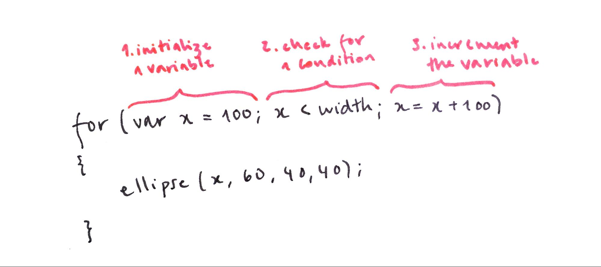

This learning activity introduces repetition using for loops. Students will alter their code from the previous lesson to demonstrate an understanding of the structure of a for loop. They will change the values inside the for loop to achieve different results in their design.
Students will be able to:
- Explain how the components of the while loops are essential to efficiency
- Create for loops
- Use for loops to generate multiple shapes
- Explain the difference between while and for loops
Repeating a block of code over and over until a condition is met is such a common system in programming that a shorthand for the while loop was created that puts the three steps together. It's called a for loop, and its syntax is as follows:

Notice that the for loop contains the same three elements as a while loop but they are written in a single line. A for loop is basically shorthand for a while loop and once you get the hang of them, they're really useful. Here are our five ellipses from the previous lesson, drawn using a for loop. Notice how we no longer have repeated lines in our code. Play with the values to see how the design changes.
Exercise #3: Play with for loops
For loops take some practice. Remove the while loop from your code and play with the variables inside the for loop to achieve different results. Pay attention to what each element in the loop controls.
In this example, I initialized the x variable as 0 so the row begins on the left side of the canvas, incremented the x location by 50 pixels so that they are drawn closer together, and only drew them on condition that x is less than or equal to width/2 so that they are only drawn on the left half of the canvas.
Notice how easy it is to create different versions of the same design. Imagine how long it would take to change the spacing, size, and location of multiple shapes if we programmed each one individually.